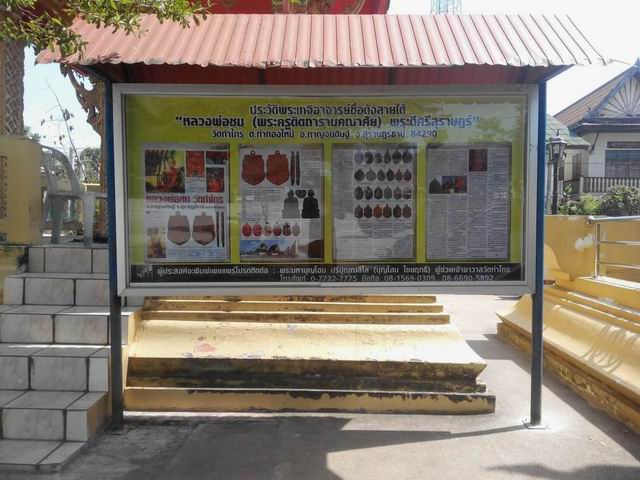
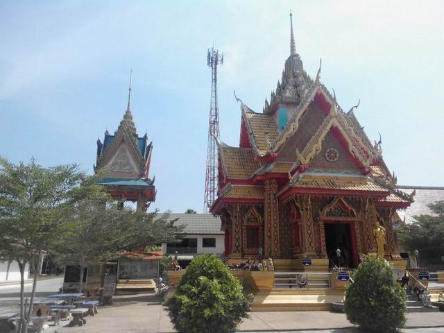
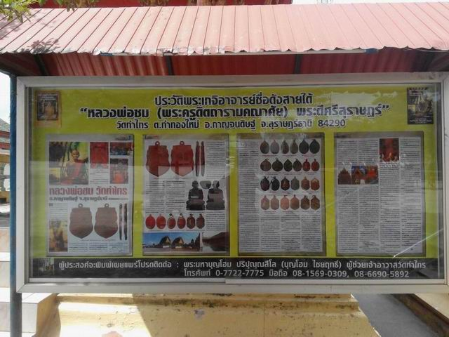
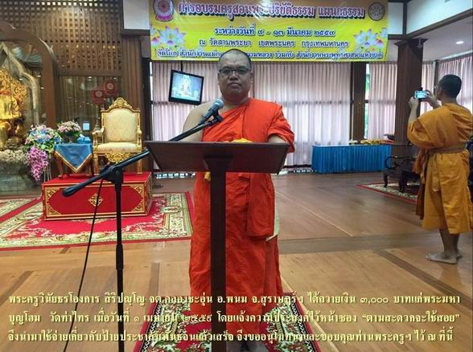
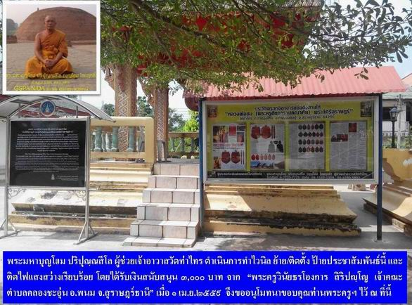
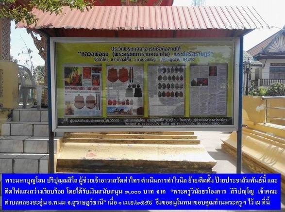
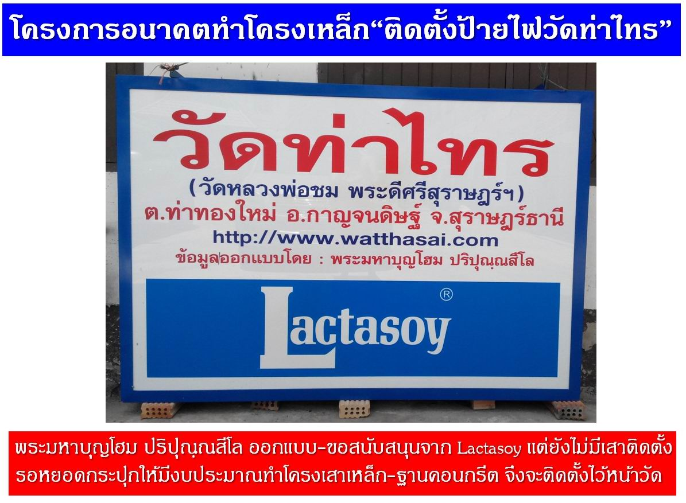

|
แอดมิน
(พระมหาบุญโฮม) ตั้งใจไว้ว่าจะดำเนินการเกี่ยวกับป้ายประชาสัมพันธ์นี้มานานแล้ว
แต่ยังไม่มีงบประมาณ(ส่วนตัว)ที่จะดำเนินการ จึงปล่อยไว้ให้คาราคาซังมานานหลายปี
และแล้วในงานต้อนรับพระบัญชาฯ แต่งตั้งเจ้าอาวาสวัดพัฒนาราม พระอารามหลวง
ณ วัดพัฒนาราม เมื่อวันที่ ๑ เมษายน ๒๕๕๙ ที่ผ่านมา ได้พบเจอกันโดยบังเอิญกับท่าน
"พระครูวินัยธรโองการ สิริปญฺโญ จต.คลองชะอุ่น อ.พนม จ.สุราษฎร์ธานี"
ซึ่งท่านได้ถวายเงิน ๓,๐๐๐ บาท ให้ข้าพเจ้า (พระมหาบุญโฮม ปริปุณฺณสีโล
ผู้ช่วยเจ้าอาวาสวัดท่าไทร) โดยระบุความประสงค์ไว้หน้าซองว่า "ตามสะดวกจะใช้สอย"
เนื่องจากข้าพเจ้ามีโครงการจะปรับปรุงพัฒนาป้ายอยู่แล้ว
วันนี้
(๔ เมษายน ๒๕๕๙) จึงถือโอกาสนำมาเป็นค่าใช้จ่ายในการทำไวนิล ซื้อวัสดุ
อุปกรณ์ในการย้ายและติดตั้งป้ายประชาสัมพันธ์นี้ พร้อมติดตั้งไฟแสงสว่าง
และค่าอุปกรณ์และน้ำยาทำความสะอาดกระจก เป็นที่เรียบร้อย สวยงาม
และใช้ประโยชน์ได้จริงตามที่ได้ตั้งใจไว้แล้ว จึงขออนุโมทนาและขอบคุณท่านพระครูฯ
ไว้ ณ ที่นี้ ด้วยอำนาจแห่งบุญกุศลที่กระทำในครั้งนี้ จงเป็นพลวปัจจัยบุญหนุนนำให้ประสบแต่ความสุข
ความเจริญรุ่งเรืองด้วยจตุรพิธพรชัย คืออายุ วรรณะ สุขะ พละ ปฏิภาณธนสารสมบัติ
ธรรมสารสมบัติ ประสบแต่สิ่งที่ปรารถนา อย่าพบเจอกับคำว่าไม่มี
ไม่ดี ไม่ได้ ไม่พอ ทุกภพ ทุกชาติ และตลอดชาติอย่างยิ่งคือพระนิพพาน
เทอญ
--------------
หมายเหตุ.-
๑.ข้าพเจ้า(พระมหาบุญโฮม)
ถือปฏิบัติเป็นการส่วนตัวว่า ทรัพย์สิน เงินทองที่ได้ในขณะเป็นพระทั้งหมดเป็นของพระพุทธศาสนา
จึงควรใช้เพื่อกิจการพระพุทธศาสนา เพื่อประโยชน์สุขแก่มหาชนตามภารกิจที่พระพุทธองค์ทรงมอบแก่พระสงฆ์ทุกรูป
ส่วนปัจจัย ๔ ที่จะต้องใช้ในชีวิตประจำวันนั้น พระพุทธเจ้า พระธรรม
และพระสงฆ์ได้จัดสรรโดยชอบและสมบูรณ์แล้ว เพราะเมื่อเราทำดีแล้ว
ธรรมะย่อมรักษาผู้ปฏิบัติ ดังนั้น ถึงแม้จะมีผู้ถวายเป็นการส่วนตัว
ก็จะนำหยอดกระปุก(ตู้บริจาค) เมื่อจำนวนเพียงพอก็จะทำอะไรบางอย่างที่ก่อให้เกิดประโยชน์ต่อศาสนาต่อไป
... สำหรับท่านใดจะนำแนวคิดไปประยุกต์ใช้ก็ไม่สงวนสิทธิ์นะครับ
๒.ในป้ายประชาสัมพันธ์
ได้ทำไวนิล "ประวัติหลวงพ่อชม ภาพและเรื่องโดย พระมหาบุญโฮม
ปริปุณฺณสีโล (ไชยฤทธิ์ ) ป.ธ.๕,น.ธ.เอก, ศษ.บ.,MPA(นิด้า) วันนี้ก้าวไกล
ตีพิมพ์ใน "ลานโพธิ์ ปักษ์แรก มีนาคม ๒๕๕๙" มาติดตั้งเพื่อประชาสัมพันธ์ให้คนทั่วไปได้รับทราบประวัติพระเกจิดังสายใต้
๓.ประวัติ พระครูดิตถารามคณาศัย
(หลวงพ่อชม คุณาราโม) "พระดีศรีสุราษฎร์ฯ พระผู้เป็นศูนย์รวมและที่พึ่งทางจิตใจชาวสุราษฎร์ธานี"
ตำแหน่ง อดีตเจ้าอาวาสวัดท่าไทร และอดีตเจ้าคณะอำเภอกาญจนดิษฐ์
วัดท่าไทร หมู่ที่ ๒ ตำบลท่าทองใหม่ อำเภอกาญจนดิษฐ์ จังหวัดสุราษฎร์ธานี
๘๔๒๙๐ ซึ่งเขียนโดย พระมหาบุญโฮม ปริปุณฺณสีโล (ไชยฤทธิ์ ) ป.ธ.๕,น.ธ.เอก,
ศษ.บ.,MPA(นิด้า) หลังจากที่ได้ตีพิมพ์มาแล้วหลายครั้ง และนำลงเว็บไซต์ทั้งของวัดท่าไทร
http://www.watthasai.com/chome.html
http://www.watthasai.net/chome.html
http://www.watthasai.org/chome.html
และเฟชวัดท่าไทรมาแล้ว วันนี้ก้าวไกล ได้นำลง "นิตยสารลานโพธิ์
ปีที่ ๔๒ ฉบับ ๑๑๘๙ ปักษ์แรก มีนาคม ๒๕๕๙ " เต็มอิ่มด้วยเนื้อหาและรูปภาพ
จึงขออนุโมทนา "ทีมงานนิตยสารลานโพธิ์" ไว้ ณ ที่นี้
.. ท่านที่ต้องการอ่านและดูโปรดติดตามใน "นิตยสารลานโพธิ์"
นะครับ
|

|
|

|
|
|
|
|
|

|
|

|
|
|
|
|
|

|
|

|
|
กำลังทะยอยตู้ลำโพง
8 ตู้ ขึ้นรถปิกอัพ ตอนครึ่ง
|
|
ตู้ลำโพงที่มอบให้
สามารถใช้งานเล่นดนตรี 1 วง ได้อย่างสบายครับ
|
|

|
|
ป้ายไฟ
"วัดท่าไทรที่ทำใหม่ (ซึ่งสร้างแทนอันเก่าที่พังและเสียหายไปตามกาลเวลา)"
ขณะนี้ตั้งไว้ ข้างกุฏิ
รอมีงบประมาณจะดำเนินการสร้างเสาโครงเหล็กให้มั่นคง แล้วจะยกขึ้นติดตั้งหน้าวัดในโอกาสต่อไป
|

กลับไปหน้า
Web วัดท่าไทร
ไป Web สำนักงานเจ้าคณะภาค
๑๖
ไป
Web ศูนย์พัฒนาคุณธรรมภาคใต้
ไป
Web วิทยุชุมชนตำบลท่าทองใหม่
ไป Web ชมรมวีอาร์ร้อยเกาะสุราษฎร์ธานี
|